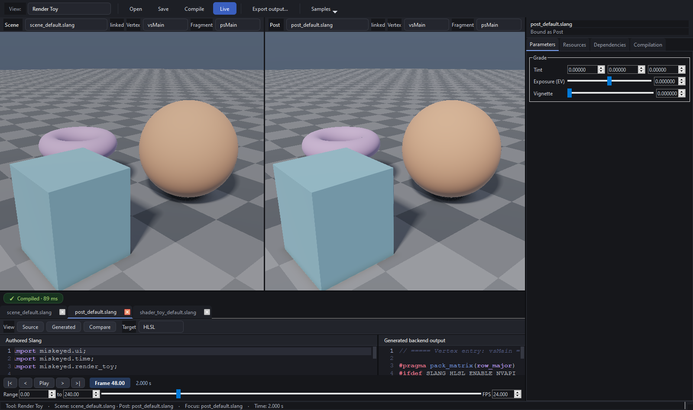

Getting started¶
What Workbench is¶
Workbench is a native technical-art shell with two shipped tool contributions: Render Toy runs a scene pass and a post-process pass, while Shader Toy is a minimal fullscreen shader loop. Both use the same workspace, editor, inspector, and time model. ANARI support is research, not a third shipped UI mode.
Install and run¶
Released wheels target CPython 3.11–3.13. Install and launch with:
python -m pip install miskeyed-workbench
workbench
workbench path/to/shader.slang
The wheel exposes the native objects through miskeyed.workbench; Python does
not own or reproduce the renderer.
First editing loop¶
Open a .slang file, choose Source or Compare, and edit. A
Workspace, documents, and bindings owns the source and focus. The in-process Slang
compiler resolves imports and reflects parameters. A bound tool session consumes
compatible entry points and QRhi presents the result. Compilation errors stay on
the document rather than destroying the last usable runtime state.

Build locally¶
A source build requires CMake 3.24+, C++20, Qt/PySide/Shiboken 6.8.x, Slang, and Python 3.11–3.13. SDK locations come from the environment:
python -m pip install --no-build-isolation -e . -v
On Windows set CMAKE_PREFIX_PATH to the Qt development SDK and SLANG_ROOT
to the Slang SDK first. Build isolation must remain disabled because the matching
Shiboken generator is supplied through Qt’s package index.
Next steps¶
Read System overview for ownership, then Slang modules and compilation for compilation and QRhi, backends, and portability for execution.